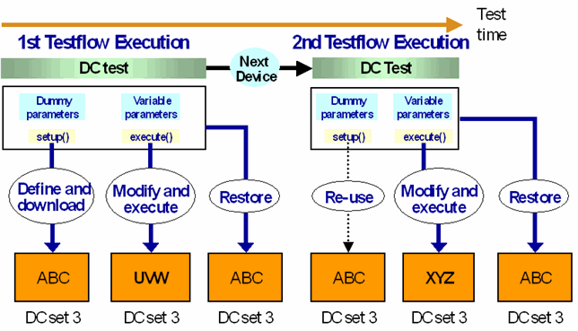

Managing DC Tests with Variable Parameters
DC measurement parameters can be defined by using variables. If a testflow containing such a variable dependent DC test is repeated in a loop, then the values of the variables may be different for each testflow repetition. In this case a new DC set, or a new measurement set, would be created with each new testflow execution, and the testflow would eventually fall back on using only one DC set, as described in DC set management.
To avoid such a DC set overflow, the
- DPS_TASK
- SPMU_TASK
- TASK_LIST
- PATTERN_CONTROLLER
API's provide a restore mechanism for repeated definitions of measurement parameters within one class object of the DPS_TASK or SPMU_TASK API, or, in the case of the TASK_LIST and PATTERN_CONTROLLER API, within one class object of a DC task API. The mechanism will be explained for the TASK_LIST API; the PATTERN_CONTROLLER API works exactly the same way. For the DPS_TASK and the SPMU_TASK API, replace "DC task" by "collection of parameters", and "measurement set" by "DC set" in the following paragraphs. A similar mechanism is employed by the SEARCH_FUNC_TASK API, see Managing Search Conditions with Variables.
The TASK_LIST API serves to download and execute measurement sets defined by the DC task API's PPMU_SETTING, PPMU_CLAMP, PPMU_RELAY, and PPMU_MEASURE (see Using DC Sets Economically: DC Sets and Measurement Sets). If a class object of one of these API's defines more than one task, the first of these definitions is considered as the original. A new measurement set will be created for this definition, unless a set with exactly these conditions already exists. The following definitions are regarded as temporary modifications. They will be written into the same measurement set that holds the parameters of the first definition (and will override the original). But after termination of the test method, the modifications will be canceled, so that the measurement set will contain the original definition again at the next testflow execution.
With this restore mechanism, you can solve the problem of variable dependent DC tasks. Namely, you must first create a variable-free DC task with dummy values for the respective parameters, and subsequently overwrite this original definition with the genuine parameters that depend on variables. Since the original values are restored, the API class object will find a measurement set containing exactly the dummy values at the next test execution, and will therefore reuse this set for the following variable dependent modifications.
Since the dummy values only serve to enable reuse of the measurement set, the resulting set must be downloaded, but not be executed. This is achieved by using the setup() member function of the TASK_LIST API. The setup() function creates a new measurement set if no set with exactly these values exists, but it does not execute the measurement.
Thus a DC task with variables should be coded according to the following schema:
- Define the DC task using dummy values instead of variables.
- Apply the setup() member function of the TASK_LIST API to download the task.
- Modify the task using variables as required.
- Apply the execute() member function of the TASK_LIST API to download the modifications and execute the measurement set.
The following figure illustrates the principles:

The following is a multi-site code example:
PPMU_MEASURE m1;
ON_FIRST_INVOCATION_BEGIN();
PPMU_SETTING s1;
PPMU_RELAY r1;
s1.pin("IN1").iRange("100uA");
s1.pin("IN1").iForce(100 uA).min(50 mV).max(100 mV);
r1.pin("IN1").status("PPMU_ON");
m1.pin("IN1").execMode("GPF");
TASK_LIST t1;
t1.add(s1).add(r1).add(m1);
t1.setup();
FOR_EACH_SITE_BEGIN();
DOUBLE var = rand() % 6;
s1.pin("IN1").iRange("100uA");
s1.pin("IN1").iForce(100 uA).min(var/1000 V).max((var+1)/1000 V);
FOR_EACH_SITE_END();
t1.execute();
ON_FIRST_INVOCATION_END();
Boolean pf = m1.getPassFail();
The example uses the rand() function to assign different values to the variable var in offline mode for every loop repetition. In practice, the value of the variable will usually be determined by a previous measurement.
Functional changes
- Introduced before SmarTest 6.3.2